<meta charset="utf-8">
<title>MOVA Design v2</title>
<meta name="claude:viewport-fit-sides" content="cover">
<link rel="stylesheet" href="https://fonts.googleapis.com/css2?family=Geist:wght@100..900&family=Geist+Mono:wght@400..700&family=Instrument+Serif:ital@0;1&display=swap">
<style>
/* Layout: a long editorial review — wide text column, phones shown at device scale in rows that wrap. Single dark look by choice: the product is a dark camera app. */
:root {
  color-scheme: dark;
  --bg: #070709; --panel: #0E0E11; --panel-2: #16161A; --rule: rgba(255,255,255,.08);
  --fg: #F3F3F5; --fg-2: #A2A2AC; --fg-3: #8E8E99; --accent: #A9A4FF; --bad: #FF6B60; --good: #3BD671;
  --display: 'Instrument Serif', 'New York', Georgia, serif;
  --ui: 'Geist', -apple-system, system-ui, sans-serif;
  --mono: 'Geist Mono', ui-monospace, 'SF Mono', monospace;
}
* { box-sizing: border-box; }
body { background: var(--bg); color: var(--fg); font: 400 16px/1.6 var(--ui); -webkit-font-smoothing: antialiased; }
.wrap { max-width: 1240px; margin: 0 auto; padding-left: max(16px, env(safe-area-inset-left, 0px)); padding-right: max(16px, env(safe-area-inset-right, 0px)); }
@media (min-width: 760px) { .wrap { padding-left: max(40px, env(safe-area-inset-left, 0px)); padding-right: max(40px, env(safe-area-inset-right, 0px)); } }
a { color: var(--accent); }
a:focus-visible, button:focus-visible { outline: 2px solid var(--fg); outline-offset: 3px; border-radius: 6px; }
h1, h2, h3 { text-wrap: balance; }
.eyebrow { font: 600 11px/1 var(--ui); letter-spacing: .14em; text-transform: uppercase; color: var(--fg-3); }
.lede { color: var(--fg-2); font-size: 18px; max-width: 40em; }
section { padding-block: 72px; border-top: 1px solid var(--rule); }
section > .wrap > h2 { font: 400 clamp(34px, 4.6vw, 56px)/1.02 var(--display); margin: 14px 0 0; letter-spacing: -.01em; }
.mono { font-family: var(--mono); font-variant-numeric: tabular-nums; }

/* hero */
.hero { padding-block: 64px 56px; display: grid; gap: 48px; }
@media (min-width: 1000px) { .hero { grid-template-columns: 1fr 1.25fr; align-items: center; } }
.mark { display: flex; align-items: center; gap: 12px; font: 700 18px/1 var(--ui); letter-spacing: .3em; }
.hero h1 { font: 400 clamp(52px, 8vw, 104px)/.95 var(--display); margin: 28px 0 0; letter-spacing: -.02em; }
.hero h1 em { color: var(--fg-2); }
.hero p { margin-top: 22px; }
.hero-phones { display: flex; gap: 18px; justify-content: center; align-items: flex-end; }
.hero-phones .dev:nth-child(2) { transform: translateY(-28px); }
@media (max-width: 640px) { .hero-phones .dev:nth-child(3) { display: none; } .hero-phones .dev { --w: 40vw !important; } .hero-phones { gap: 12px; } }
@media (max-width: 520px) { .dev { --w: min(236px, 72vw) !important; } .pair .dev { --w: min(210px, 42vw) !important; } .pair { grid-template-columns: auto auto; } .pair > div { grid-column: 1 / -1; } }

/* device frame */
.dev { flex: none; width: var(--w, 236px); max-width: 100%; padding: 7px; border-radius: calc(var(--w, 236px) * .16); background: #000; box-shadow: 0 0 0 1px #2a2a30, 0 30px 60px -24px rgba(0,0,0,.8); }
.dev img { display: block; width: 100%; height: auto; aspect-ratio: 390 / 844; border-radius: calc(var(--w, 236px) * .135); }
figure { margin: 0; }
figcaption { margin-top: 12px; font-size: 14px; color: var(--fg-2); max-width: 30ch; }
figcaption b { display: block; color: var(--fg); font-weight: 600; margin-bottom: 2px; }

/* rows */
.row { display: flex; flex-wrap: wrap; gap: 36px 28px; margin-top: 40px; }
.flow { display: flex; gap: 28px; margin-top: 40px; overflow-x: auto; padding-bottom: 18px; scroll-snap-type: x mandatory; }
.flow figure { scroll-snap-align: start; }
.flow .n { font: 500 12px/1 var(--mono); color: var(--accent); }

/* headline compare */
.vs { display: grid; gap: 40px; margin-top: 44px; align-items: start; }
@media (min-width: 900px) { .vs { grid-template-columns: auto auto 1fr; } }
.vs .tag { font: 600 11px/1 var(--ui); letter-spacing: .14em; text-transform: uppercase; margin-bottom: 12px; display: block; }
.vs .tag.b { color: var(--bad); } .vs .tag.a { color: var(--good); }
.notes { list-style: none; margin: 0; padding: 0; display: grid; gap: 18px; counter-reset: n; }
.notes li { display: grid; grid-template-columns: 30px 1fr; gap: 6px; color: var(--fg-2); font-size: 15px; }
.notes li::before { counter-increment: n; content: counter(n, decimal-leading-zero); font: 500 12px/1.9 var(--mono); color: var(--accent); }
.notes b { color: var(--fg); font-weight: 600; }

/* audit table */
.table { margin-top: 36px; overflow-x: auto; }
table { border-collapse: collapse; width: 100%; min-width: 640px; font-size: 15px; }
th { text-align: left; font: 600 11px/1 var(--ui); letter-spacing: .12em; text-transform: uppercase; color: var(--fg-3); padding: 0 16px 12px 0; }
td { padding: 14px 16px 14px 0; border-top: 1px solid var(--rule); vertical-align: top; color: var(--fg-2); }
td:first-child { color: var(--fg); font-weight: 600; width: 16%; }

/* system */
.sys { display: grid; gap: 28px; margin-top: 40px; }
@media (min-width: 900px) { .sys { grid-template-columns: 1fr 1fr; } }
.box { background: var(--panel); border-radius: 18px; padding: 26px; min-width: 0; }
.box h3 { margin: 0 0 18px; font: 600 15px/1.2 var(--ui); }
.sw { display: grid; grid-template-columns: repeat(auto-fill, minmax(104px, 1fr)); gap: 12px; }
.sw div { font-size: 12px; color: var(--fg-2); }
.sw i { display: block; height: 52px; border-radius: 10px; margin-bottom: 8px; box-shadow: inset 0 0 0 1px var(--rule); }
.sw b { display: block; color: var(--fg); font-weight: 500; }
.scale > div { display: flex; align-items: baseline; gap: 16px; padding: 8px 0; border-top: 1px solid var(--rule); }
.scale span:first-child { width: 112px; flex: none; font: 500 11px/1 var(--mono); color: var(--fg-3); }
.kv { display: grid; grid-template-columns: 130px 1fr; gap: 10px 16px; font-size: 14px; color: var(--fg-2); }
.kv b { color: var(--fg); font-weight: 500; }
.motifs { display: grid; gap: 22px; }
.motif { display: grid; grid-template-columns: 84px 1fr; gap: 16px; align-items: center; font-size: 14px; color: var(--fg-2); }
.motif b { color: var(--fg); display: block; }
.demo { height: 64px; border-radius: 10px; background: var(--panel-2); position: relative; display: grid; place-items: center; }
.brk { width: 44px; height: 34px; position: relative; background: #2a2a30; border-radius: 4px; }
.brk::after { content: ""; position: absolute; inset: -5px; --c: var(--fg); --l: 9px; --w: 1.5px;
  background: linear-gradient(var(--c),var(--c)) 0 0/var(--l) var(--w), linear-gradient(var(--c),var(--c)) 0 0/var(--w) var(--l), linear-gradient(var(--c),var(--c)) 100% 0/var(--l) var(--w), linear-gradient(var(--c),var(--c)) 100% 0/var(--w) var(--l), linear-gradient(var(--c),var(--c)) 0 100%/var(--l) var(--w), linear-gradient(var(--c),var(--c)) 0 100%/var(--w) var(--l), linear-gradient(var(--c),var(--c)) 100% 100%/var(--l) var(--w), linear-gradient(var(--c),var(--c)) 100% 100%/var(--w) var(--l); background-repeat: no-repeat; }

/* live prototype */
.live { display: flex; flex-wrap: wrap; gap: 32px; margin-top: 40px; }
.live .frame { width: 406px; max-width: 100%; padding: 8px; border-radius: 58px; background: #000; box-shadow: 0 0 0 1px #2a2a30; }
.live iframe { display: block; width: 390px; height: 844px; border: 0; border-radius: 50px; background: #0E0E11; }
@media (max-width: 440px) { .live .frame { padding: 0; background: none; box-shadow: none; } .live iframe { width: 100%; border-radius: 28px; } }

/* before / after review */
.pairs { display: grid; gap: 56px; margin-top: 44px; }
.pair { display: grid; gap: 24px; align-items: start; }
@media (min-width: 900px) { .pair { grid-template-columns: auto auto 1fr; } }
.pair .dev { --w: 210px; }
.pair .old { opacity: .9; }
.pair h3 { margin: 0; font: 600 20px/1.2 var(--ui); }
.pair p { margin: 10px 0 0; color: var(--fg-2); font-size: 15px; max-width: 46ch; }
.pair .lbl { font: 600 10px/1 var(--ui); letter-spacing: .14em; text-transform: uppercase; color: var(--fg-3); margin-bottom: 8px; display: block; }

/* research + testing */
.refs { display: grid; gap: 16px; margin-top: 36px; }
@media (min-width: 900px) { .refs { grid-template-columns: repeat(2, 1fr); } }
.ref { padding: 22px; border-radius: 16px; background: var(--panel); min-width: 0; }
.ref h3 { margin: 0; font: 600 16px/1.2 var(--ui); overflow-wrap: anywhere; }
.ref .meta { font: 500 12px/1.4 var(--mono); color: var(--fg-3); margin-top: 6px; }
.ref p { margin: 12px 0 0; color: var(--fg-2); font-size: 15px; }
.checks { list-style: none; padding: 0; margin: 28px 0 0; display: grid; gap: 8px; font-size: 15px; color: var(--fg-2); }
.checks li::before { content: "PASS"; font: 600 11px/1 var(--mono); color: var(--good); margin-right: 12px; }
.checks.no li::before { content: "NOT TESTED"; color: var(--fg-3); }
footer { padding-block: 48px 72px; color: var(--fg-3); font-size: 14px; border-top: 1px solid var(--rule); }
@media (prefers-reduced-motion: reduce) { .flow { scroll-behavior: auto; } }
</style>

<header class="wrap hero">
  <div>
    <div class="mark"><svg viewBox="0 0 64 64" width="30" height="30" fill="none" stroke-linecap="round" stroke-linejoin="round" aria-hidden="true"><path d="M14 46V20l18 18 18-18v26" stroke="#A9A4FF" stroke-width="7" opacity=".7" transform="translate(5 5)"/><path d="M14 46V20l18 18 18-18v26" stroke="#F3F3F5" stroke-width="7"/></svg>MOVA</div>
    <h1>Design v2. <em>Monitor.</em></h1>
    <p class="lede">MOVA's second design pass: a premium iPhone camera, editor and AI studio built around reference-video recreation. It has one token system, one component library, and 27 screens. The recreation flow is rebuilt around what the AI actually understands: shots, camera paths, light and pace.</p>
    <p class="lede" style="font-size: 15px"><span class="mono">27 screens · 79 tokens · 28 components · 18 interaction checks passed</span></p>
  </div>
  <div class="hero-phones" aria-label="Three redesigned screens">
    <div class="dev" style="--w: 200px">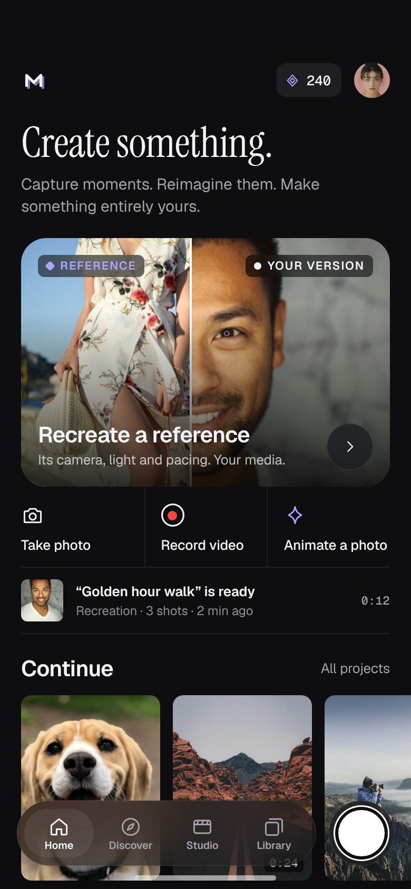</div>
    <div class="dev" style="--w: 230px">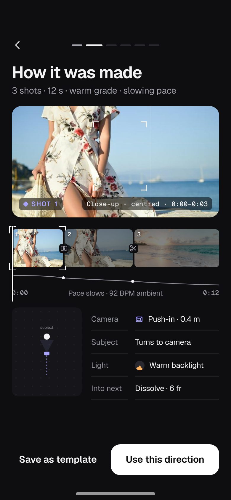</div>
    <div class="dev" style="--w: 200px">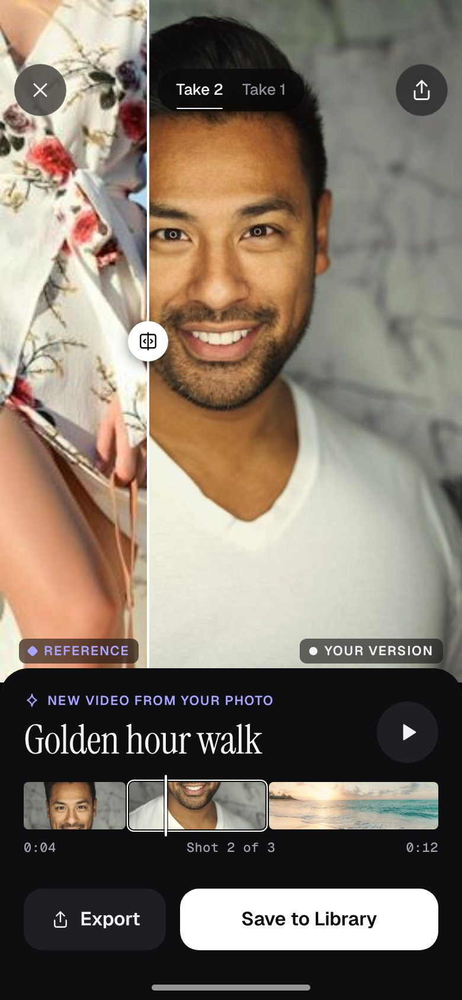</div>
  </div>
</header>

<section aria-labelledby="h-vs">
  <div class="wrap">
    <span class="eyebrow">The screen that started it</span>
    <h2 id="h-vs">Customize Recreation, before and after.</h2>
    <div class="vs">
      <figure><span class="tag b">v1</span><div class="dev old" style="--w: 250px">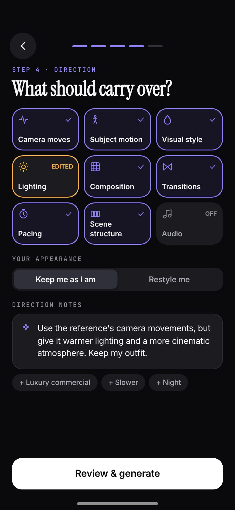</div></figure>
      <figure><span class="tag a">v2</span><div class="dev" style="--w: 250px">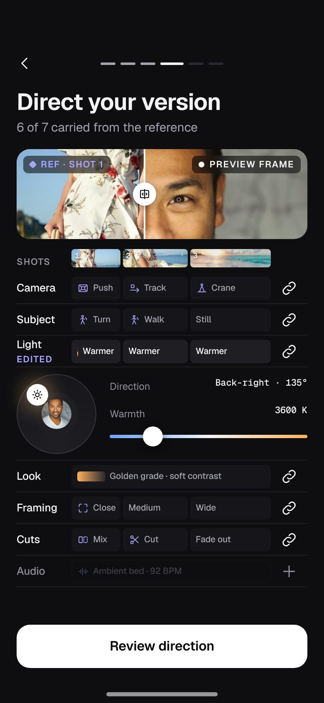</div></figure>
      <ol class="notes">
        <li><span><b>Nine abstract tiles became seven lanes of real data.</b> Each row is a characteristic and each column is one of the reference's shots, so "Camera" now reads Push, Track, Crane instead of a checkbox.</span></li>
        <li><span><b>Violet outlines on every tile are gone.</b> Keep or off is a single icon per lane, and an off lane dims its data instead of losing a border.</span></li>
        <li><span><b>Lighting is a control, not a label.</b> Drag the key light around your own face, then set warmth on a real color-temperature track.</span></li>
        <li><span><b>You see the change before paying for it.</b> A wipe compares reference shot 1 with a preview frame of you.</span></li>
        <li><span><b>Every control works.</b> Lanes, dial, slider and wipe all respond to pointer and keyboard, with ARIA state.</span></li>
      </ol>
    </div>
  </div>
</section>

<section aria-labelledby="h-audit">
  <div class="wrap">
    <span class="eyebrow">Audit of v1</span>
    <h2 id="h-audit">What made it feel generated.</h2>
    <div class="table">
      <table>
        <thead><tr><th>Area</th><th>v1 problem</th><th>v2 rule</th></tr></thead>
        <tbody>
          <tr><td>Color</td><td>Violet did six jobs (AI, selection, links, steps, reference frame, credits). Three competing yellows. Colors hard-coded inline in the markup.</td><td>Violet means intelligence only: AI marks, AI data and one AI button per screen. Selection is white. Every color is a role token, and the screens contain no raw color values.</td></tr>
          <tr><td>Type</td><td>The serif headline on every screen, at five sizes. A mono label repeating the step bar. Body text in five ad-hoc sizes.</td><td>An eight-step scale. The serif appears only at editorial moments (Home, a finished film, empty states). Mono is for timecode and readouts.</td></tr>
          <tr><td>Shape</td><td>One 16–18px card radius wrapping everything, plus cards inside cards.</td><td>Radius follows size (6 / 10 / 16 / 24). Depth comes from a five-step graphite ladder and hairlines, not outlines.</td></tr>
          <tr><td>Controls</td><td>One pill shape for five meanings: 15 on Camera Pro alone, many only 28pt tall.</td><td>Each meaning gets its own control: rail (tabs), picker (values), ruler (manual dials), lanes (carry-over), switch (settings). Every target is at least 44pt.</td></tr>
          <tr><td>Signature flow</td><td>Analysis as stacked tag cards, Customize as a 3×3 grid of checkboxes, no preview of the outcome.</td><td>Shot map, top-down camera path, framing overlay, pacing curve, lanes, light dial, storyboard and compare wipe.</td></tr>
          <tr><td>States</td><td>One board of text cards.</td><td>Six full screens: processing, empty, failed with refund, offline, not enough credits, saved and exporting.</td></tr>
          <tr><td>Interaction</td><td>Static. No pressed, focus or disabled states.</td><td>A shared behavior script, focus rings, aria-pressed and aria-checked states, Reduce Motion handling.</td></tr>
        </tbody>
      </table>
    </div>
  </div>
</section>

<section aria-labelledby="h-sys">
  <div class="wrap">
    <span class="eyebrow">System</span>
    <h2 id="h-sys">Monitor: content first, quiet chrome.</h2>
    <p class="lede" style="margin-top: 18px">The direction comes from a cinema field monitor. The picture is the color. Controls read like instrument readouts, and anything MOVA's AI touches carries one periwinkle signal. Tokens live in <span class="mono">tokens.css</span> and components in <span class="mono">components.css</span>; screens use only those.</p>
    <div class="sys">
      <div class="box">
        <h3>Surfaces and text</h3>
        <div class="sw">
          <div><i style="background:#070709"></i><b>canvas</b><span class="mono">#070709</span></div>
          <div><i style="background:#0E0E11"></i><b>surface-1</b><span class="mono">#0E0E11</span></div>
          <div><i style="background:#16161A"></i><b>surface-2</b><span class="mono">#16161A</span></div>
          <div><i style="background:#1E1E23"></i><b>surface-3</b><span class="mono">#1E1E23</span></div>
          <div><i style="background:#28282E"></i><b>surface-4</b><span class="mono">#28282E</span></div>
          <div><i style="background:#F3F3F5"></i><b>text-1</b><span class="mono">17.4:1</span></div>
          <div><i style="background:#A2A2AC"></i><b>text-2</b><span class="mono">7.6:1</span></div>
          <div><i style="background:#8E8E99"></i><b>text-3</b><span class="mono">5.9:1</span></div>
        </div>
      </div>
      <div class="box">
        <h3>Signals: one meaning each</h3>
        <div class="sw">
          <div><i style="background:#A9A4FF"></i><b>accent</b>AI marks · 8.7:1</div>
          <div><i style="background:#6A62F2"></i><b>accent-fill</b>AI button · 4.5:1</div>
          <div><i style="background:#FFFFFF"></i><b>select</b>Selection</div>
          <div><i style="background:#FF453A"></i><b>rec</b>Recording only</div>
          <div><i style="background:#FFD60A"></i><b>cam</b>Focus, lens</div>
          <div><i style="background:#3BD671"></i><b>positive</b>Done, ready</div>
          <div><i style="background:#FFB547"></i><b>caution</b>Fix suggested</div>
          <div><i style="background:#FF6B60"></i><b>critical</b>Failed</div>
        </div>
      </div>
      <div class="box">
        <h3>Type scale</h3>
        <div class="scale">
          <div><span>display 40</span><span style="font: 400 40px/1 var(--display)">Create something.</span></div>
          <div><span>title1 28 / 650</span><span style="font: 650 28px/1 var(--ui); letter-spacing: -.02em">How it was made</span></div>
          <div><span>title2 21 / 600</span><span style="font: 600 21px/1 var(--ui)">Trending recipes</span></div>
          <div><span>headline 16 / 600</span><span style="font: 600 16px/1 var(--ui)">Golden hour walk</span></div>
          <div><span>body 15</span><span style="font-size: 15px; color: var(--fg-2)">3 shots · 12 s · warm grade</span></div>
          <div><span>micro mono 11</span><span class="mono" style="font-size: 11px; color: var(--fg-2)">0:07–0:12 · 41 / 120 frames</span></div>
        </div>
        <p style="color: var(--fg-3); font-size: 13px; margin: 14px 0 0">Shown in Geist, Instrument Serif and Geist Mono. In the app: SF Pro with Dynamic Type, New York, and SF Mono.</p>
      </div>
      <div class="box">
        <h3>Space, shape, motion, haptics</h3>
        <div class="kv">
          <span>Space</span><b class="mono">4 · 8 · 12 · 16 · 20 · 24 · 32 · 40 · 48</b>
          <span>Radius</span><b class="mono">6 frames · 10 controls · 16 buttons · 24 sheets</b>
          <span>Motion</span><b class="mono">120 press · 220 select · 380 screen · 700 AI reveal</b>
          <span>Easing</span><b>Standard for most; a spring overshoot only on switches and brackets</b>
          <span>Haptics</span><b>Selection on lanes, shots and ruler ticks · medium impact on shutter and Generate · success when ready · warning on failure and credits</b>
          <span>Reduce Motion</span><b>Camera paths freeze on frame one, particles and scan lines turn off, durations go to 0</b>
        </div>
      </div>
      <div class="box" style="grid-column: 1 / -1">
        <h3>Signature elements</h3>
        <div class="motifs" style="grid-template-columns: repeat(auto-fit, minmax(260px, 1fr)); display: grid">
          <div class="motif"><div class="demo"><span class="brk"></span></div><span><b>Viewfinder brackets</b>Selection framed like a focus box, replacing every colored outline.</span></div>
          <div class="motif"><div class="demo"><span style="font: 600 10px/1 var(--ui); letter-spacing: .1em; color: var(--accent)">◆ REF</span>&nbsp;<span style="font: 600 10px/1 var(--ui); letter-spacing: .1em">● YOURS</span></div><span><b>Source tags</b>Diamond means reference, dot means your media. They're never confused, even in thumbnails.</span></div>
          <div class="motif"><div class="demo"><svg width="60" height="48" viewBox="0 0 60 48" aria-hidden="true"><circle cx="30" cy="12" r="4" fill="#F3F3F5"/><path d="M30 44 V22" stroke="#A9A4FF" stroke-dasharray="3 3" stroke-width="1.5"/><rect x="25" y="38" width="10" height="6" rx="1.5" fill="#A9A4FF"/></svg></div><span><b>Camera-path diagrams</b>Top-down moves that animate, editable as presets.</span></div>
          <div class="motif"><div class="demo"><svg width="64" height="24" viewBox="0 0 64 24" aria-hidden="true"><g stroke="#8E8E99"><path d="M2 6v12M8 9v6M14 9v6M20 9v6M26 9v6M38 9v6M44 9v6M50 9v6M56 9v6M62 6v12"/></g><path d="M32 2v20" stroke="#FFD60A" stroke-width="2"/></svg></div><span><b>Detented rulers</b>For ISO, shutter, adjustments and speed, instead of rows of pills.</span></div>
        </div>
      </div>
    </div>
  </div>
</section>

<section aria-labelledby="h-flow">
  <div class="wrap">
    <span class="eyebrow">Signature feature</span>
    <h2 id="h-flow">Reference to your version, in six steps.</h2>
    <p class="lede" style="margin-top: 18px">Scroll sideways. Each step answers one question, and the AI's understanding is shown as things you can see and change.</p>
    <div class="flow">
      <figure><div class="dev">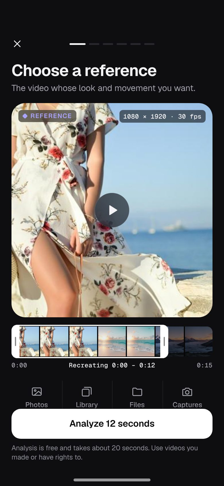</div><figcaption><span class="n">1</span><b>Choose a reference</b>Trim to the seconds you want; sources sit in a quiet row.</figcaption></figure>
      <figure><div class="dev">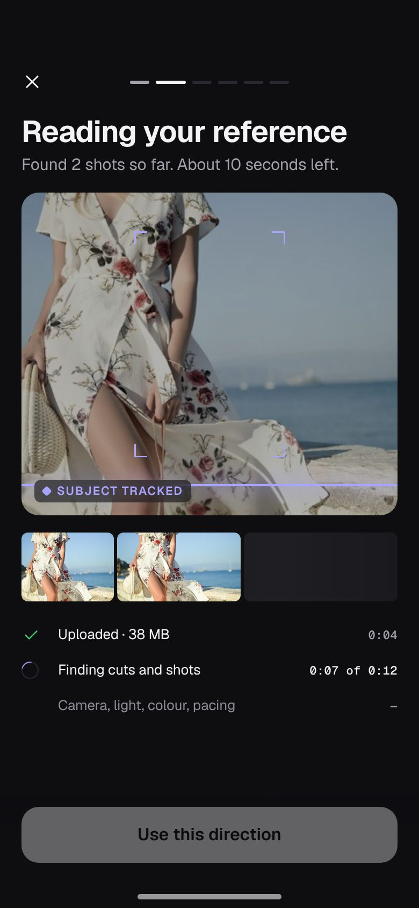</div><figcaption><span class="n">1→2</span><b>Reading it</b>Shots appear as they're found; real stages and timecodes.</figcaption></figure>
      <figure><div class="dev"></div><figcaption><span class="n">2</span><b>How it was made</b>Shot map, framing overlay, pacing curve, animated camera path.</figcaption></figure>
      <figure><div class="dev">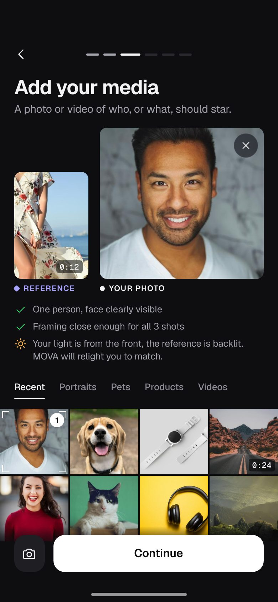</div><figcaption><span class="n">3</span><b>Add your media</b>A fit check says what MOVA will compensate for.</figcaption></figure>
      <figure><div class="dev"></div><figcaption><span class="n">4</span><b>Direct it</b>Lanes per characteristic, light dial and preview wipe.</figcaption></figure>
      <figure><div class="dev">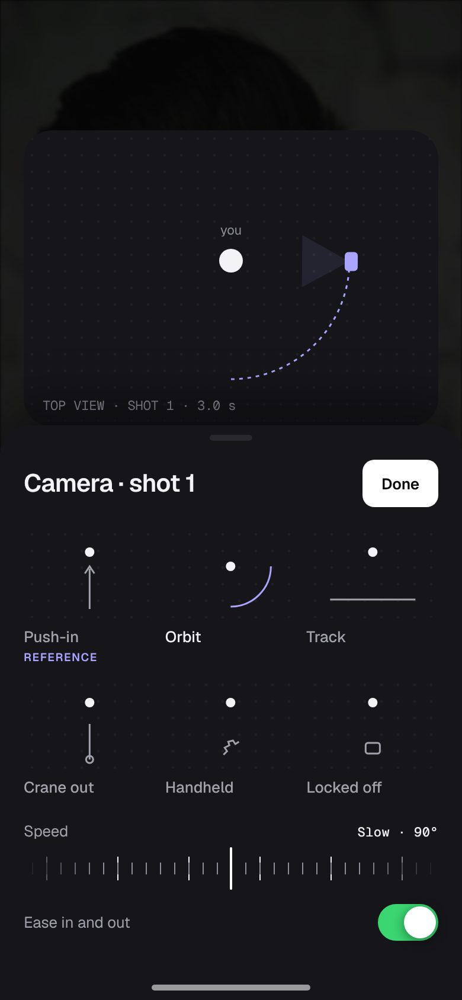</div><figcaption><span class="n">4a</span><b>Change a move</b>Path presets drawn top-down, speed on a ruler.</figcaption></figure>
      <figure><div class="dev">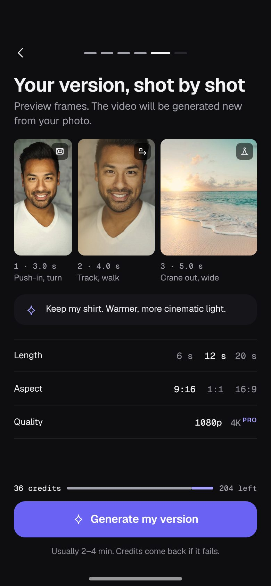</div><figcaption><span class="n">5</span><b>Review</b>Storyboard of your version, note, cost before you tap.</figcaption></figure>
      <figure><div class="dev">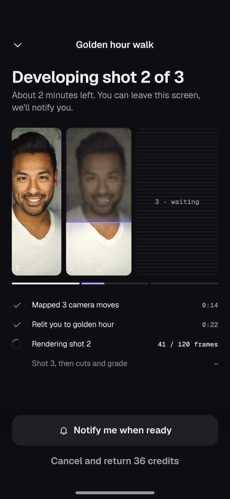</div><figcaption><span class="n">5→6</span><b>Developing</b>Shots expose one by one, with frame counts.</figcaption></figure>
      <figure><div class="dev"></div><figcaption><span class="n">6</span><b>Your version</b>Full-screen wipe against the reference, shot scrubber.</figcaption></figure>
    </div>
  </div>
</section>

<section aria-labelledby="h-live">
  <div class="wrap">
    <span class="eyebrow">Interactive</span>
    <h2 id="h-live">Try the two key screens.</h2>
    <p class="lede" style="margin-top: 18px">On the left, tap a shot to change the camera path and readouts. On the right, tap a lane's icon to drop it, drag the sun around the face, and drag the wipe. Keyboard arrows work on every control.</p>
    <div class="live">
      <div class="frame"><iframe src="screens/ref-analysis.html" title="Interactive: How it was made" loading="lazy"></iframe></div>
      <div class="frame"><iframe src="screens/direction.html" title="Interactive: Direct your version" loading="lazy"></iframe></div>
    </div>
  </div>
</section>

<section aria-labelledby="h-all">
  <div class="wrap">
    <span class="eyebrow">Product</span>
    <h2 id="h-all">The rest of MOVA, on the same system.</h2>
    <div class="row">
      <figure><div class="dev"></div><figcaption><b>Home</b>A live reference-to-yours split leads; quick actions in one row.</figcaption></figure>
      <figure><div class="dev">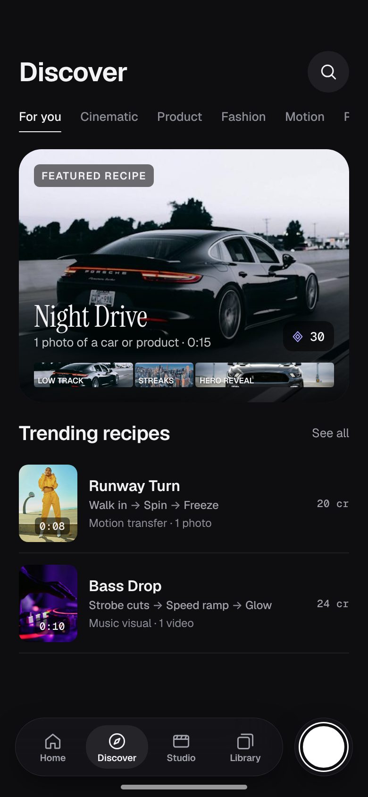</div><figcaption><b>Discover</b>Templates are recipes: each shows its shot structure.</figcaption></figure>
      <figure><div class="dev">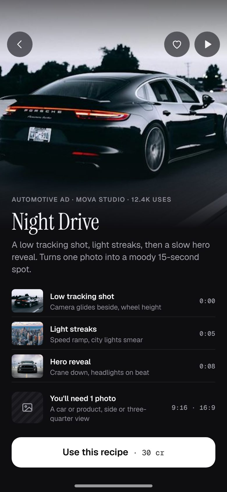</div><figcaption><b>Template details</b>Recipe steps with timecodes and the input it needs.</figcaption></figure>
      <figure><div class="dev">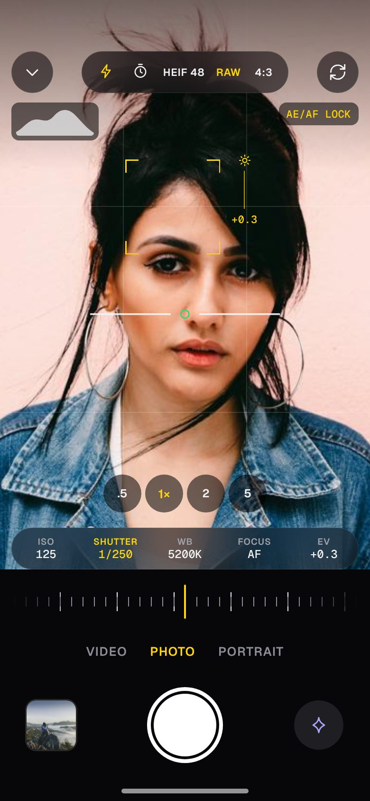</div><figcaption><b>Camera</b>One readout strip; tap a value for a detented ruler.</figcaption></figure>
      <figure><div class="dev">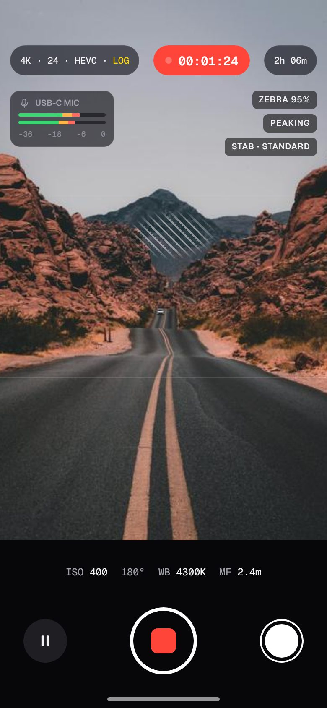</div><figcaption><b>Recording</b>Log, meters in dB, zebras, peaking, storage left.</figcaption></figure>
      <figure><div class="dev">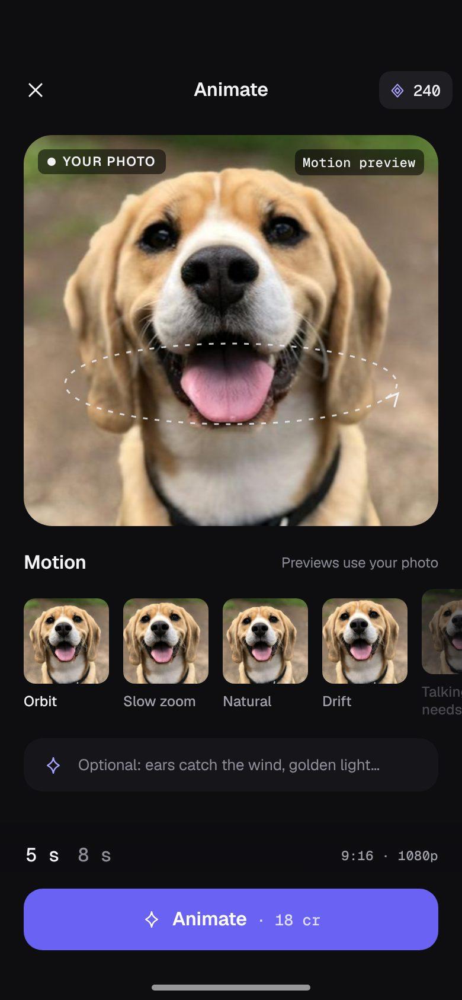</div><figcaption><b>Animate</b>Each motion previews live on your own photo.</figcaption></figure>
      <figure><div class="dev">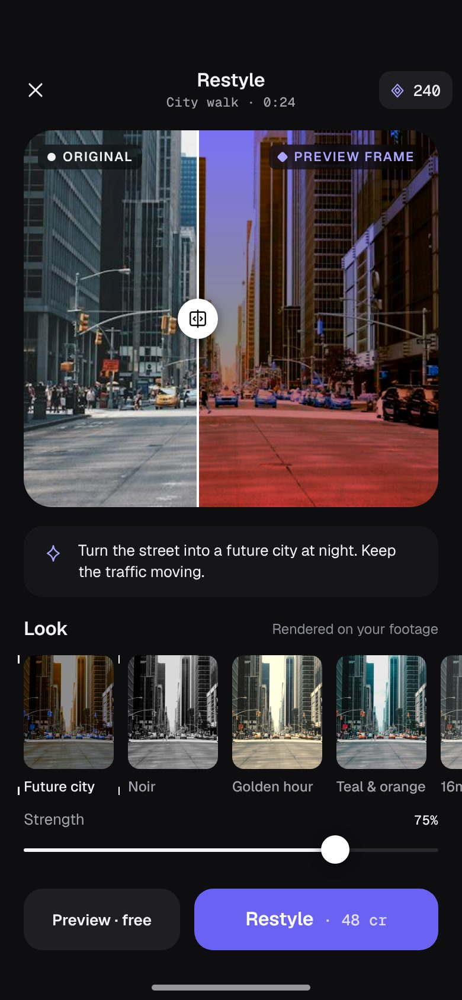</div><figcaption><b>Restyle</b>Compare wipe; looks rendered on your footage.</figcaption></figure>
      <figure><div class="dev">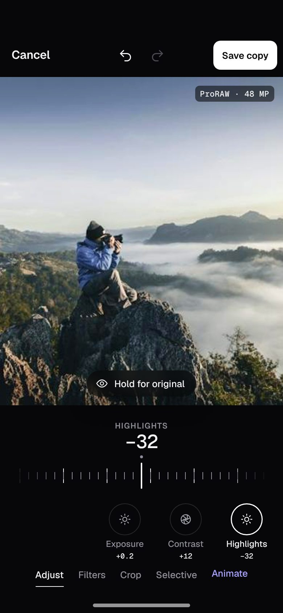</div><figcaption><b>Photo editor</b>Bipolar ruler; changed tools show their values.</figcaption></figure>
      <figure><div class="dev">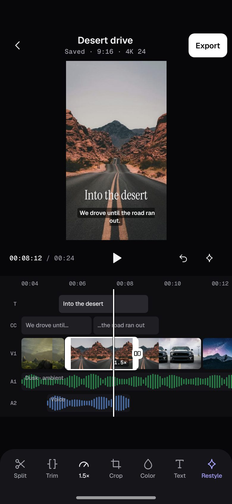</div><figcaption><b>Video editor</b>Multitrack timeline, real waveforms, clip toolbar.</figcaption></figure>
      <figure><div class="dev">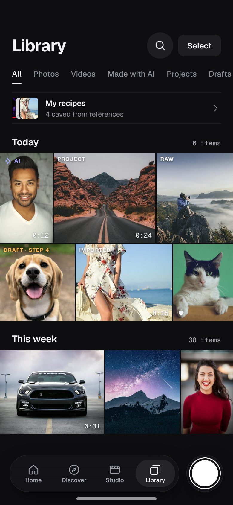</div><figcaption><b>Library</b>Justified mosaic, text marks, saved recipes.</figcaption></figure>
      <figure><div class="dev">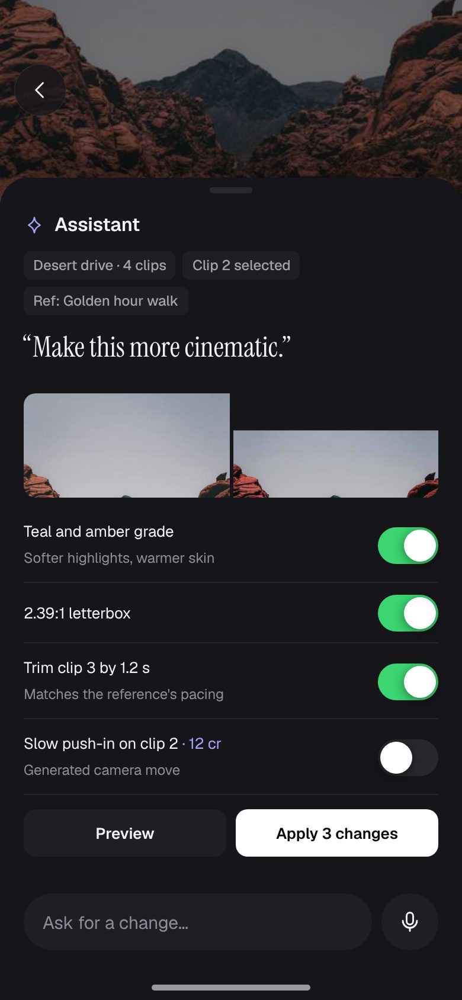</div><figcaption><b>Assistant</b>Proposals with before/after and per-change cost.</figcaption></figure>
      <figure><div class="dev">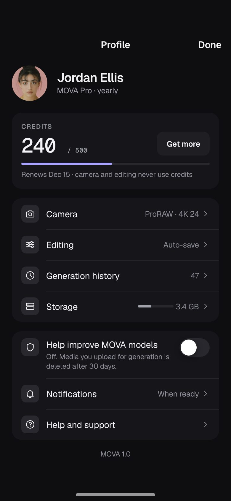</div><figcaption><b>Profile &amp; settings</b>Credit meter; privacy explained in plain words.</figcaption></figure>
      <figure><div class="dev">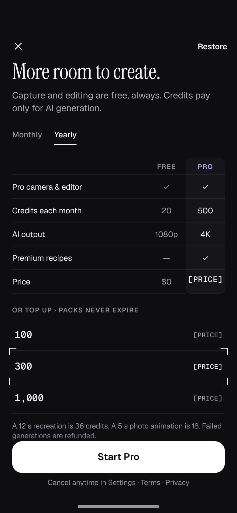</div><figcaption><b>Plans &amp; credits</b>A comparison table, not upsell cards. Prices are [PRICE].</figcaption></figure>
    </div>
  </div>
</section>

<section aria-labelledby="h-states">
  <div class="wrap">
    <span class="eyebrow">States</span>
    <h2 id="h-states">Designed for when things don't go to plan.</h2>
    <div class="row">
      <figure><div class="dev">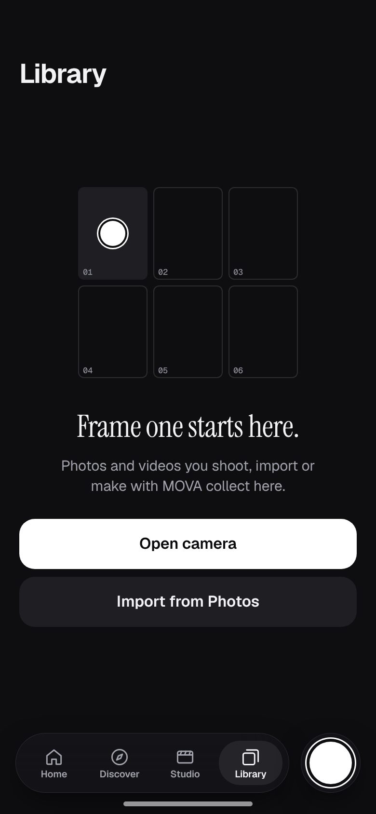</div><figcaption><b>Empty</b>A blank contact sheet with frame one ready.</figcaption></figure>
      <figure><div class="dev">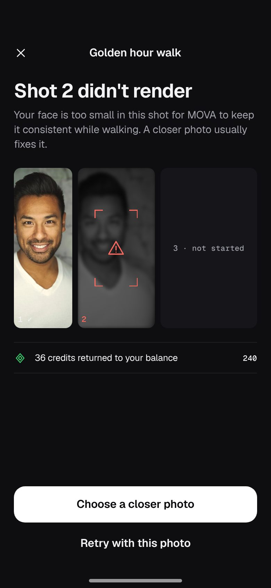</div><figcaption><b>Failed</b>Which shot, why, the fix, and the refund.</figcaption></figure>
      <figure><div class="dev">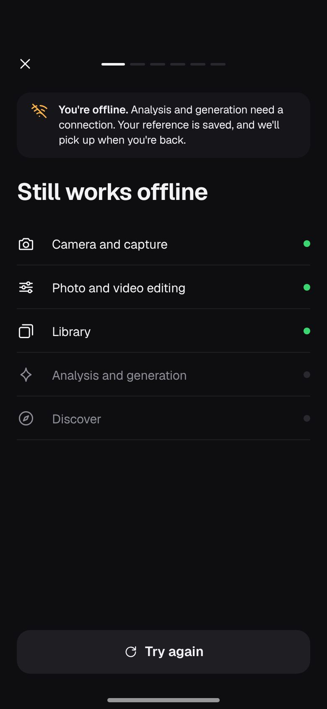</div><figcaption><b>Offline</b>What still works, what waits for a connection.</figcaption></figure>
      <figure><div class="dev">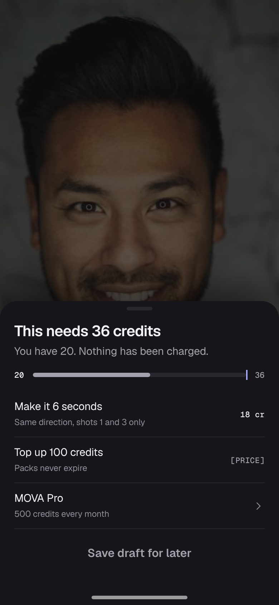</div><figcaption><b>Not enough credits</b>Nothing charged; a cheaper version is offered first.</figcaption></figure>
      <figure><div class="dev">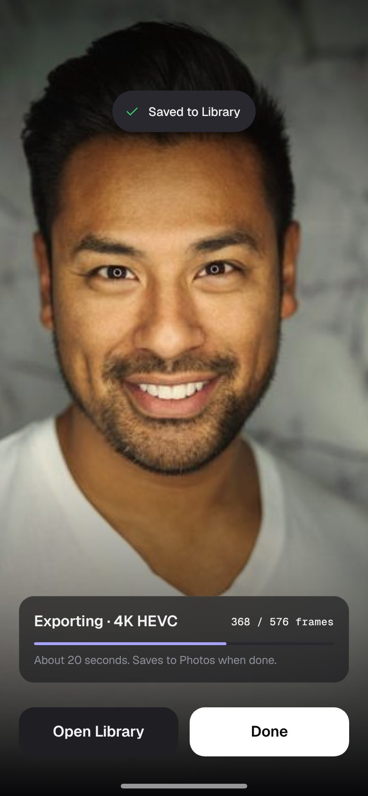</div><figcaption><b>Saved · exporting</b>Toast, a ten-particle spark once, real frame count.</figcaption></figure>
    </div>
  </div>
</section>

<section aria-labelledby="h-review">
  <div class="wrap">
    <span class="eyebrow">Before and after</span>
    <h2 id="h-review">Screen by screen.</h2>
    <div class="pairs">
      <div class="pair"><figure><span class="lbl">v1</span><div class="dev old">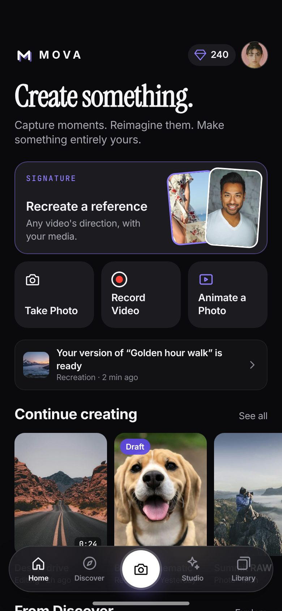</div></figure><figure><span class="lbl">v2</span><div class="dev"></div></figure><div><h3>Home</h3><p>The violet-outlined signature card and three boxed tiles are gone. The hero now shows the feature itself: a reference and your version, split. Quick actions sit in one hairline row, and projects show their progress through the six steps.</p></div></div>
      <div class="pair"><figure><span class="lbl">v1</span><div class="dev old">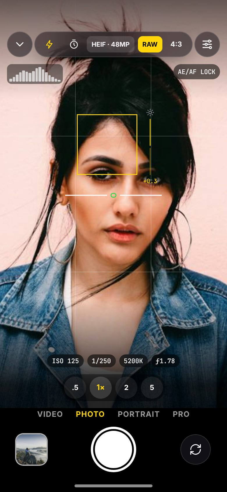</div></figure><figure><span class="lbl">v2</span><div class="dev"></div></figure><div><h3>Professional camera</h3><p>Four badge pills became one glass readout strip. Tapping a value opens a detented ruler, and yellow is reserved for focus and lens. The "send to Studio" button replaces the second flip button.</p></div></div>
      <div class="pair"><figure><span class="lbl">v1</span><div class="dev old">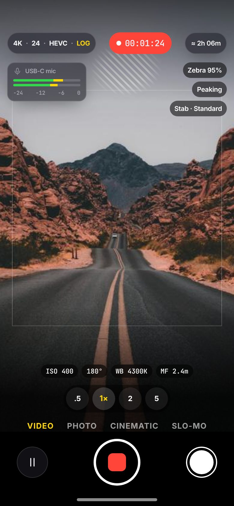</div></figure><figure><span class="lbl">v2</span><div class="dev"></div></figure><div><h3>Recording</h3><p>The same information, quieter. The 16:9 guide is drawn as hairlines instead of a box, the meters carry a dB scale, and the readouts sit on one line.</p></div></div>
      <div class="pair"><figure><span class="lbl">v1</span><div class="dev old">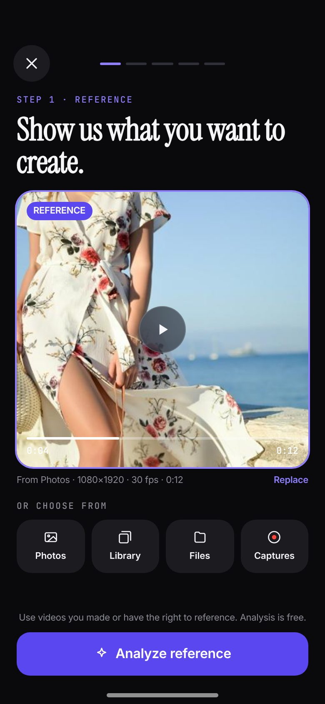</div></figure><figure><span class="lbl">v2</span><div class="dev"></div></figure><div><h3>Reference import</h3><p>A task title replaces the marketing line, and a trimmer lets you choose which seconds to recreate. The four source tiles became a hairline row.</p></div></div>
      <div class="pair"><figure><span class="lbl">v1</span><div class="dev old">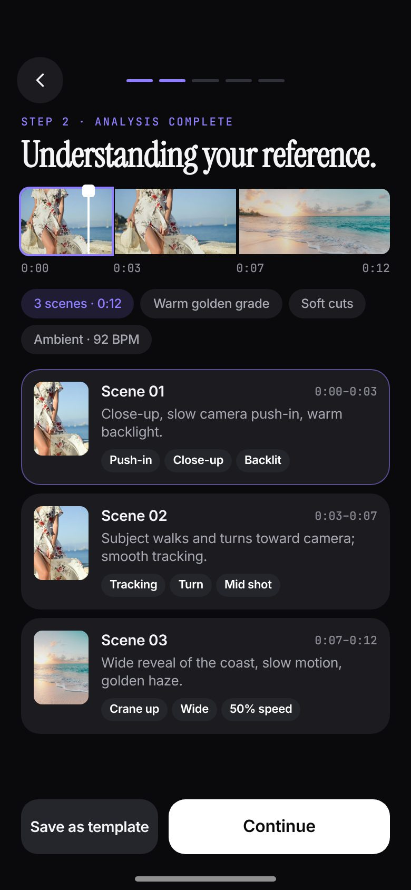</div></figure><figure><span class="lbl">v2</span><div class="dev"></div></figure><div><h3>Reference analysis</h3><p>Stacked cards of tag pills became a selectable shot map sized by duration. It adds a framing overlay with the subject bracketed, a pacing curve, an animated top-down camera path and a compact readout.</p></div></div>
      <div class="pair"><figure><span class="lbl">v1</span><div class="dev old">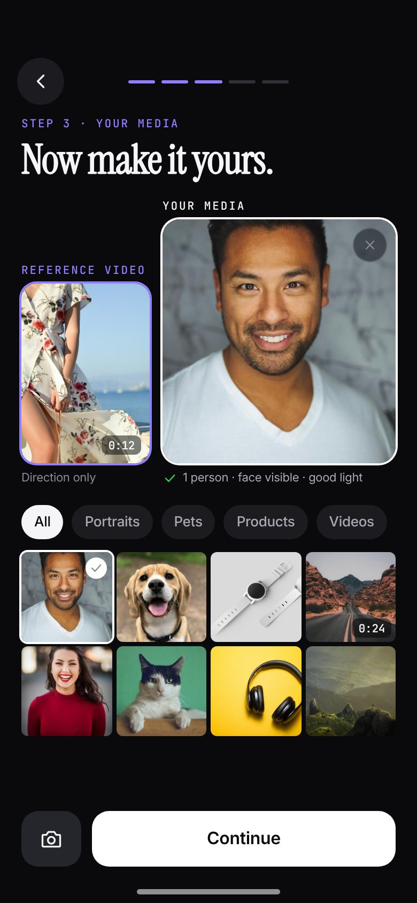</div></figure><figure><span class="lbl">v2</span><div class="dev"></div></figure><div><h3>Select your media</h3><p>Source tags replace the colored frames. A fit check names what is fine and what MOVA will compensate for, like relighting a front-lit photo to match a backlit reference.</p></div></div>
      <div class="pair"><figure><span class="lbl">v1</span><div class="dev old">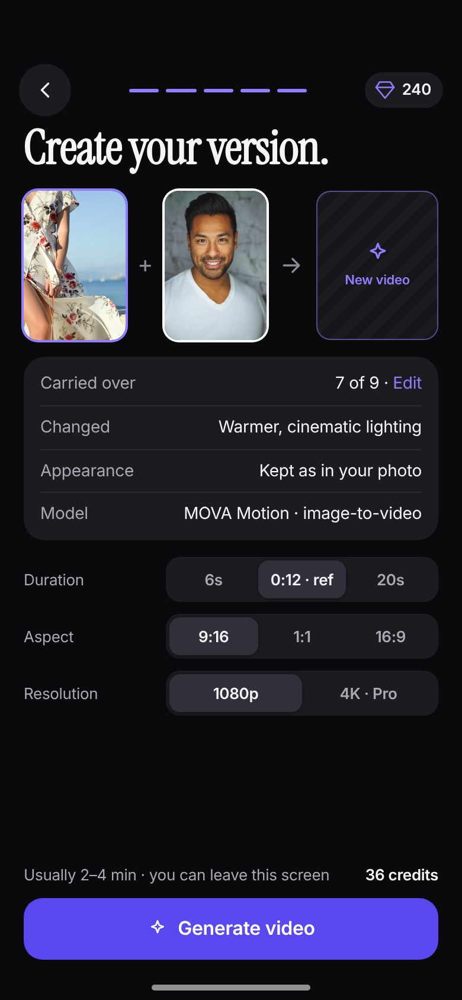</div></figure><figure><span class="lbl">v2</span><div class="dev"></div></figure><div><h3>AI generation</h3><p>A list of settings became a storyboard of your version, with the move for each shot. Output options use pickers, and a credit meter shows what is left afterwards. It's the only violet button in the flow.</p></div></div>
      <div class="pair"><figure><span class="lbl">v1</span><div class="dev old">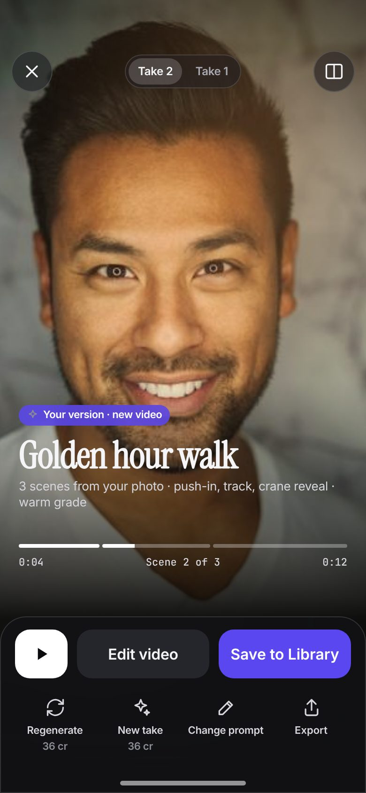</div></figure><figure><span class="lbl">v2</span><div class="dev"></div></figure><div><h3>Generated result</h3><p>The player becomes a full-screen comparison you can drag. Shots are marked on the scrubber, and the title earns the editorial serif.</p></div></div>
      <div class="pair"><figure><span class="lbl">v1</span><div class="dev old">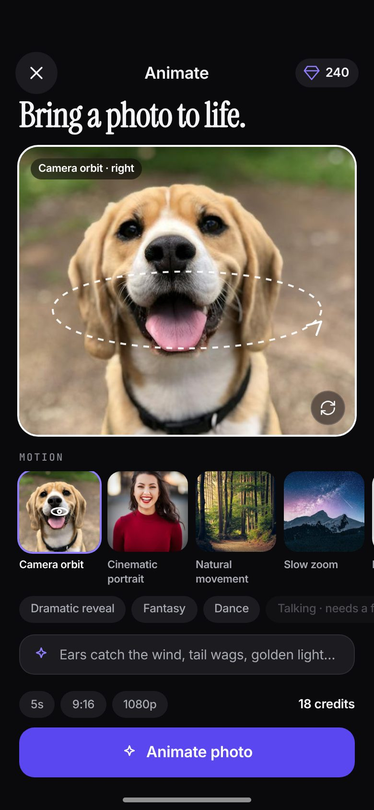</div></figure><figure><span class="lbl">v2</span><div class="dev"></div></figure><div><h3>Photo animation</h3><p>Motion options were thumbnails of other people's photos. Now each one animates your own photo, and options that can't work say why.</p></div></div>
      <div class="pair"><figure><span class="lbl">v1</span><div class="dev old">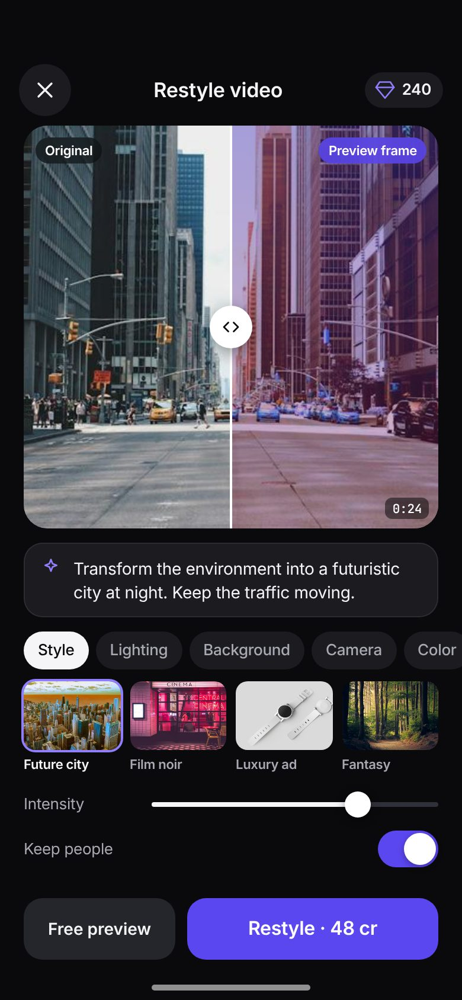</div></figure><figure><span class="lbl">v2</span><div class="dev"></div></figure><div><h3>Video restyle</h3><p>Pill tabs are gone. Looks are rendered on your footage, the compare wipe is draggable, and strength sits on one slider.</p></div></div>
      <div class="pair"><figure><span class="lbl">v1</span><div class="dev old">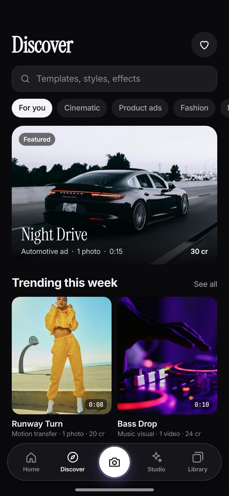</div></figure><figure><span class="lbl">v2</span><div class="dev"></div></figure><div><h3>Discover</h3><p>A card grid became recipes: each one lists its moves (Walk in → Spin → Freeze), and the featured recipe shows its shot strip.</p></div></div>
      <div class="pair"><figure><span class="lbl">v1</span><div class="dev old">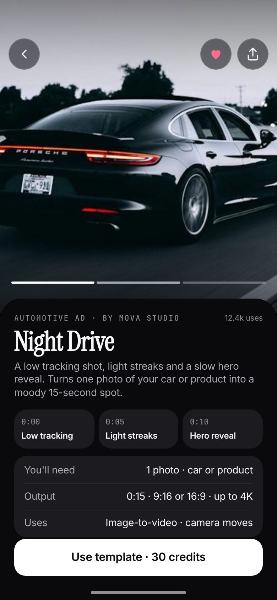</div></figure><figure><span class="lbl">v2</span><div class="dev"></div></figure><div><h3>Template details</h3><p>Recipe steps carry timecodes and descriptions, and the required input is drawn as an empty slot.</p></div></div>
      <div class="pair"><figure><span class="lbl">v1</span><div class="dev old">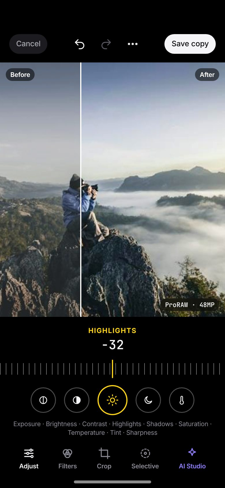</div></figure><figure><span class="lbl">v2</span><div class="dev"></div></figure><div><h3>Photo editor</h3><p>Before and after moved to a hold gesture, so the photo stays clean. The ruler is bipolar around zero, and every changed tool shows its value.</p></div></div>
      <div class="pair"><figure><span class="lbl">v1</span><div class="dev old">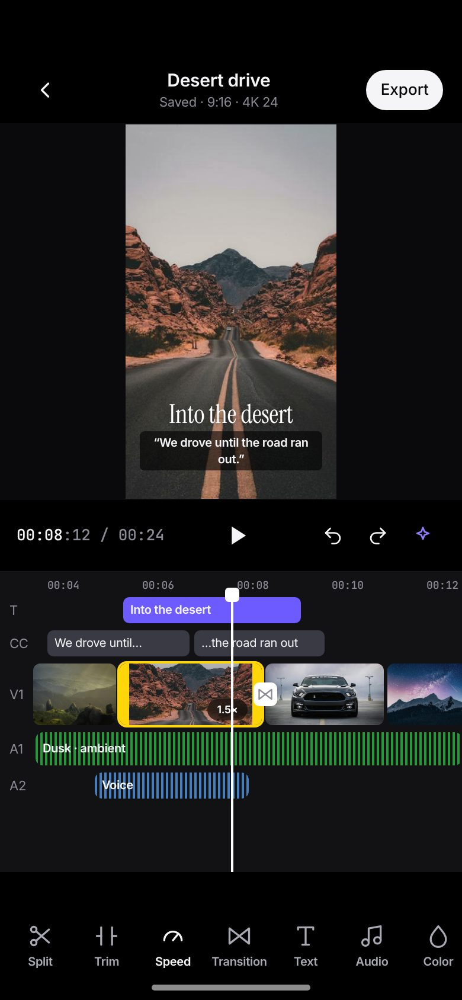</div></figure><figure><span class="lbl">v2</span><div class="dev"></div></figure><div><h3>Video editor</h3><p>Selection is white with real trim handles. The waveforms are real bars, not stripes, and a contextual toolbar acts on the selected clip.</p></div></div>
      <div class="pair"><figure><span class="lbl">v1</span><div class="dev old">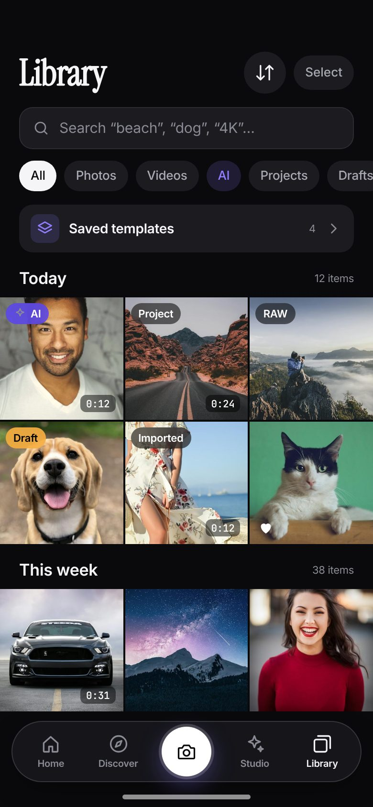</div></figure><figure><span class="lbl">v2</span><div class="dev"></div></figure><div><h3>Library</h3><p>A square grid with badge pills became a justified mosaic with small text marks. Drafts say which step they stopped at.</p></div></div>
      <div class="pair"><figure><span class="lbl">v1</span><div class="dev old">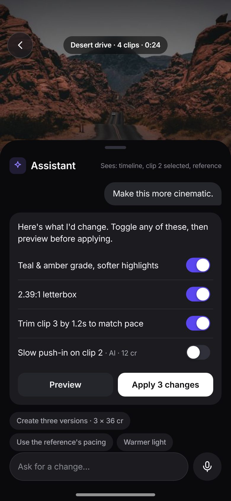</div></figure><figure><span class="lbl">v2</span><div class="dev"></div></figure><div><h3>AI assistant</h3><p>Context is stated up front. The answer is a proposal: a before/after frame and switchable changes, each with its cost.</p></div></div>
      <div class="pair"><figure><span class="lbl">v1</span><div class="dev old">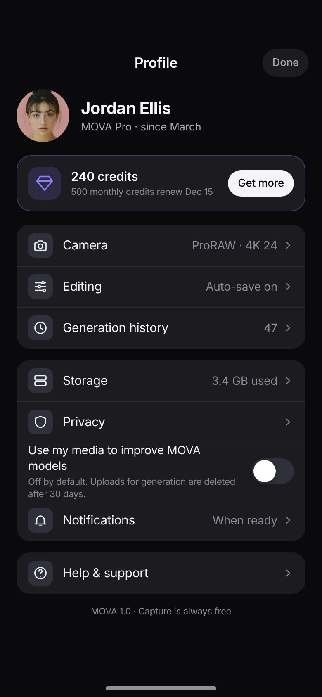</div></figure><figure><span class="lbl">v2</span><div class="dev"></div></figure><div><h3>Profile &amp; settings</h3><p>Credits are a meter with the renewal date. The violet card outline is gone, and the privacy switch explains itself.</p></div></div>
      <div class="pair"><figure><span class="lbl">v1</span><div class="dev old">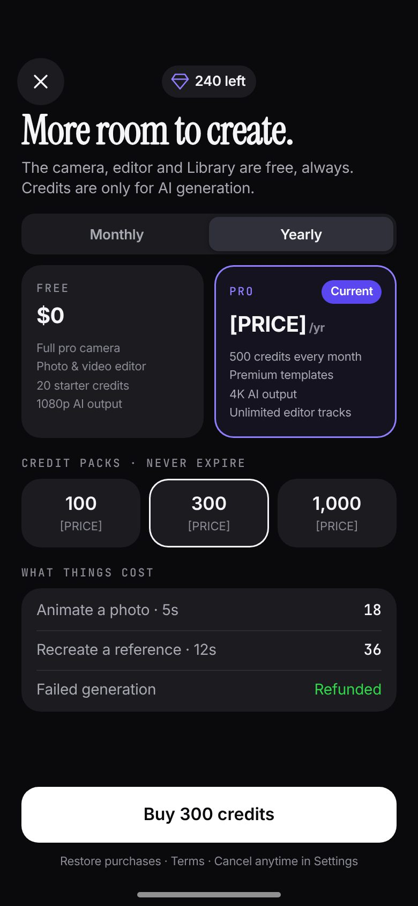</div></figure><figure><span class="lbl">v2</span><div class="dev"></div></figure><div><h3>Plans &amp; credits</h3><p>Two plan cards became a comparison table. Packs are a list, and the cost of a typical recreation is stated in one sentence.</p></div></div>
    </div>
  </div>
</section>

<section aria-labelledby="h-refs">
  <div class="wrap">
    <span class="eyebrow">Research</span>
    <h2 id="h-refs">What we took from five repositories.</h2>
    <p class="lede" style="margin-top: 18px">All five are MIT-licensed. Nothing was copied wholesale and no dependency was added; this phase uses them as references only.</p>
    <div class="refs">
      <div class="ref"><h3>meliwat/awesome-ios-design-md</h3><div class="meta">MIT · markdown only · no dependencies</div><p>From the VSCO, Midjourney and Flickr write-ups: content supplies the color, hairlines over shadows, monospace readouts, an oversized capture control, justified mosaics.</p></div>
      <div class="ref"><h3>muhittincamdali/SwiftUI-Design-System-Pro</h3><div class="meta">MIT · iOS 17, Xcode 26 · 25 stars · README notes it was reduced to placeholder files in June 2026</div><p>The token naming pattern by role and group only. Not a dependency: its components don't follow its own theme, and its history is unusual.</p></div>
      <div class="ref"><h3>mikelikesdesign/SwiftUI-experiments</h3><div class="meta">MIT · prototypes, "not production ready"</div><p>Draggable and particle sliders inspired the detented rulers and the light dial; the haptic dots experiment informed the haptic map.</p></div>
      <div class="ref"><h3>EmergeTools/Pow</h3><div class="meta">MIT · iOS 15+ · no dependencies · last commit Feb 2026</div><p>The Film Exposure transition inspired how shots develop during generation. If the build uses Pow, its effects need our own Reduce Motion gate.</p></div>
      <div class="ref"><h3>twostraws/Vortex</h3><div class="meta">MIT · iOS 15+ · last commit Apr 2026</div><p>Its spark preset inspired the single ten-particle burst on Saved. Used once, briefly, and turned off under Reduce Motion.</p></div>
    </div>
  </div>
</section>

<section aria-labelledby="h-test">
  <div class="wrap">
    <span class="eyebrow">Verification</span>
    <h2 id="h-test">What was actually tested.</h2>
    <p class="lede" style="margin-top: 18px">Automated checks in headless Chromium at 390 × 844, against the HTML prototype.</p>
    <ul class="checks">
      <li>Analysis: picking a shot updates the preview, readouts and camera path; arrow keys move between shots</li>
      <li>Direction: switching a lane off updates "carried" from 6 to 5 and sets aria-pressed</li>
      <li>Direction: the light dial responds to arrow keys (135° → 150°) and updates its readout</li>
      <li>Direction: dragging the wipe sets its value; the warmth slider responds to the keyboard</li>
      <li>Camera: the shutter ruler steps from 1/250 to 1/350 by keyboard; lens choice updates aria-checked</li>
      <li>Animate: the unavailable "Talking" option can't be selected</li>
      <li>Assistant: the change switches toggle</li>
      <li>All internal links between the 27 screens resolve; the icon sprite renders; no script errors</li>
      <li>Contrast computed for every text and signal token (minimum 4.5:1; tertiary text raised after the check)</li>
      <li>No raw color values in any screen file; every color comes from tokens</li>
    </ul>
    <ul class="checks no">
      <li>VoiceOver and Dynamic Type on a real iPhone (this is HTML, not the app)</li>
      <li>Motion performance on device, and real haptics</li>
      <li>Usability with people</li>
    </ul>
  </div>
</section>

<footer>
  <div class="wrap">MOVA design v2 · design phase, no app code · Photography from Unsplash</div>
</footer>
